Module 1: Application Deployment
GitHub Actions help you automate your software development workflows from within GitHub. You can deploy workflows in the same place where you store code and collaborate on pull requests and issues.
In GitHub Actions, a workflow is an automated process that you set up in your GitHub repository. You can build, test, package, release, or deploy any project on GitHub with a workflow.
Each workflow is made up of individual actions that run after a specific event (like a pull request) occur. The individual actions are packaged scripts that automate software development tasks.
Exercise 1: Deployment strategy
In this module we will introduce the strategy followed for the Continuous Delivery workflow, to automate the creation of infrastructure and deployment of a new build.
There are three environments that we want to automate the deployment to:
DEV: Developers use DEV stage to do testing/build/experiments for the Bookings app.
QA: Developers use QA stage (after DEV stage) to run automated integration tests in this stage/environment. Integration tests are used to immediately alert the team if modifications introduced have an unexpected or negative impact to the existing functionality. Run automated UI tests in this stage/environment to identify the presence of defects in a product/software under test by using Graphical User Interface (GUI).
PRD: Production stage that is generally hand-off to the customer. Any changes deployed to production stage must have pre-approvals set and should be deployed when all other environments are deployed successfully including running all the tests.
Each environment should be deployed in the sequence based on the success of the previous environment. To understand how this is achieved in the CD workflow, we need to checkout two sections:
on section: This is the section where triggers for the workflow are configured. Configure the
workflow_dispatchto determine the types of trigger. This allows manually trigger the workflow under demand.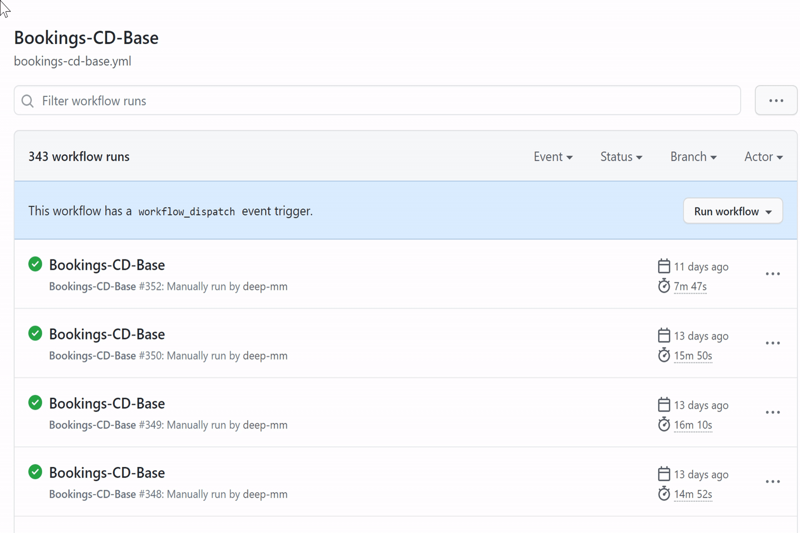
Triggers can be configured against specific branches. For this set of labs, we have established a naming convention for our branches based on the
users/{user_alias}/{purpose_of_the_branch}schema. This is why, underbranches:you can see both,mainandusers/**.Finally, there is the inputs section. You can define the input variables that the workflow can accept. They can be optional and default values can be set. For the lab exercises, we will be defining the environment we will be running based on this input, under the environment variable name. This input can be accessed by every action in every job. 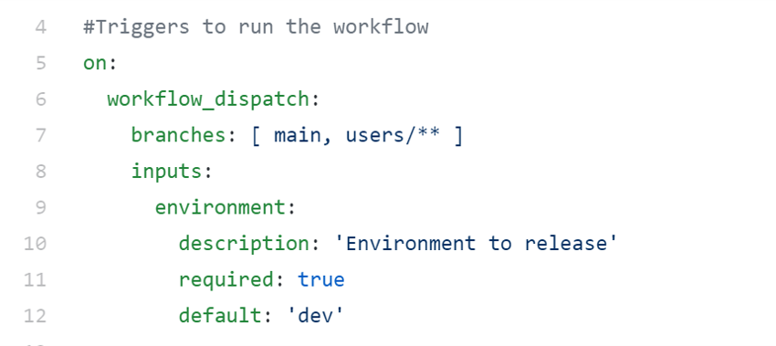
workflow-dispatch section: GitHub doesn't have a concept similar to the ADO task groups yet implemented. This is why, having sequential deployment becomes more tricky in GitHub workflows. Because we want to avoid having multiple instances of the same workflows, one per environment, we have implemented a custom approach by making use of the
benc-uk/workflow-dispatch@v1action.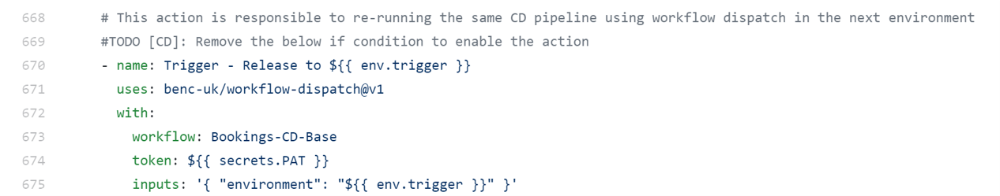
At the last job of the
bookings-cd-base.ymlfile, you can find theRelease_To_Next_Env. In this job, the success of the current execution is evaluated. If succeeded, then the last action will trigger the same workflow but with the next environment. If not, then there won't be any further deployments.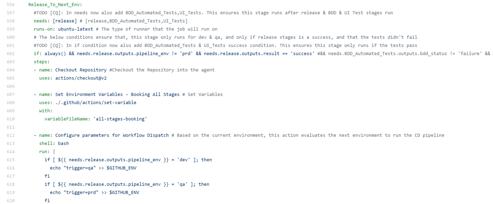
Exercise 2: Workflow changes
To complete this exercise, you will make changes to the cd workflow, which is {bookings/coupons}-cd-base.yml based on your lab. The objective is to enable all actions from the release job, to automatically deploy the required infrastructure and source code in the web app.
Go to the repository in Github.
Click on Settings > Environments and select the prd environment. In this blade you can configure different settings like minimum number of approvers, wait timer before deployment, allowed branches to deploy in this environment and environment secrets.
Select the checkbox Required reviewers and add your team's name. Now, before deploying into the production environment, someone from that team will need to approve deployment.
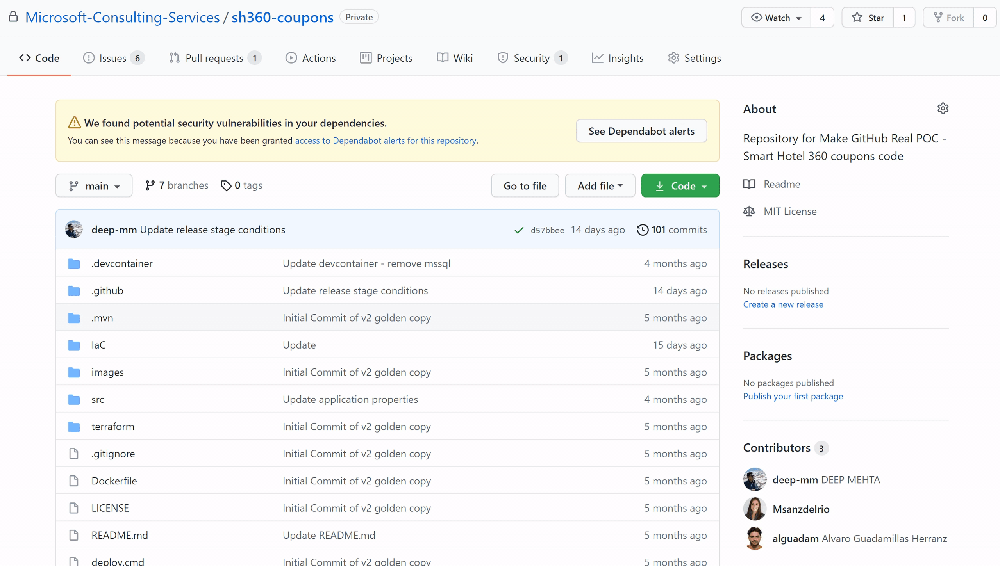
Go back to the repository and open the GitHub Codespaces if you have one already created. If not, go ahead and select
+ New codespace.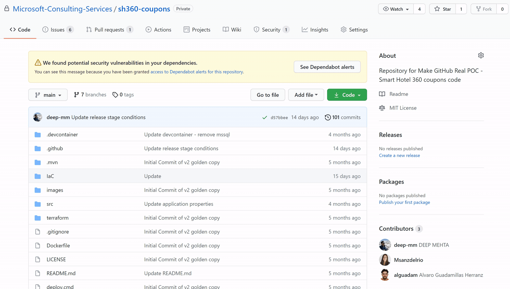
Create a new branch following the
users/{user_alias}/{purpose_of_the_branch}schema.Open the .github/workflows/{bookings/coupons}-cd-base.yml file.
In the release job definition, checkout how the name of the job is updated based on the running environment. You can also see how output variables are configured globally based on other actions results. Finally, the environment parameter is configured against the existing environments in the GitHub repository that we have edited in step number 3.
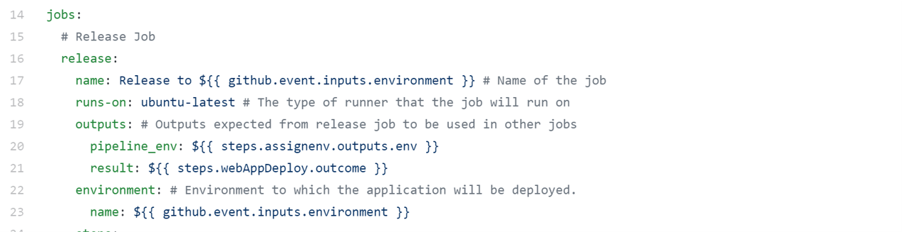
The
Assign Environment based on conditionsaction checks what environment is running and configures that value as a global variable (env) in the workflow. This will become the pipeline_env output variable that we have seen in the previous task.After checking out the repository, a Microsoft Teams card is created with the details of the specific job. This allows the team to continuously collaborate and monitor the status of the deployments without going to the GitHub repository.
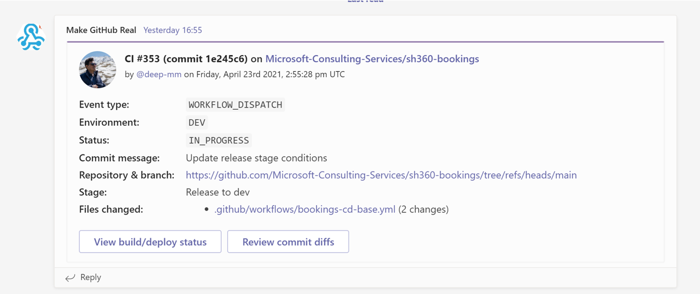
Next action downloads the build artifacts generated by the Continuous Integration workflow. Based on the deployment environment, a set of global variables are loaded by using a custom action named
set-variable. This action loads the values as global variables from a specific JSON file. You can checkout the code of this action in the.github/actions/set-variable/action.ymlfile.Go to the
Create GitHub deployment for deployment-${{ env.pipeline_env }}action. Remove the if condition to initiate a deployment in the specified environment. Deployment statuses allow external services to mark deployments with an error, failure, pending, in_progress, queued, or success state that systems listening to deployment_status events can consume.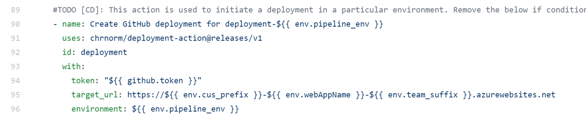
In the
Azure WebAppaction, remove the if condition to deploy the application onto Azure WebApp. This actions relies on the infrastructure previously deployed in the release job.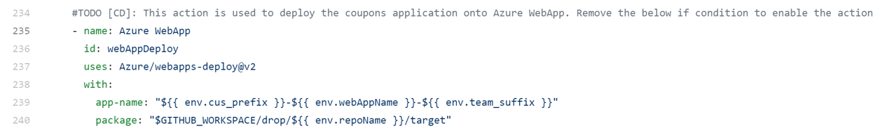
From the
Update deployment statustasks, update the{{ false }}condition withsuccess()andfailure()values respectively. This actions will update the status of the deployments in the repository.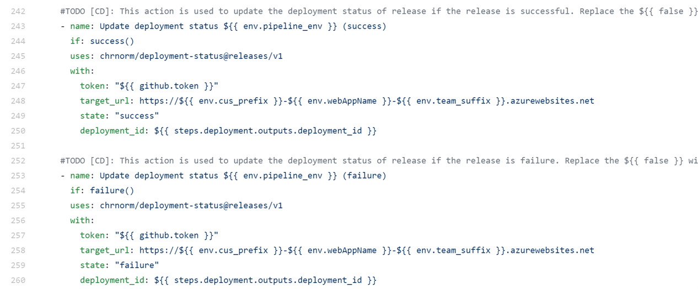
Now, in order to release to the next environment from previous environment, go to the action
Trigger - Release to ${{ env.trigger }}under theRelease_To_Next_Envstage. Remove the false condition to enable this action.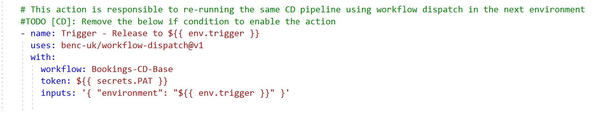
After having done all the changes. Commit them and create a Pull Request. Refer Raise a PR to see how to raise a new pull request. Link both, the commit and pull request, to the specific task in ADO by using the
AB#{work_item_id}format. As part of the pull request check, the CI and CodeQl workflows will be triggered. Once the pull requests is approved and checks have been passed, you can merge the changes into the main branch.As part of this merge, the CI workflow will be triggered again. If successfully executed, then the CD workflow will be triggered afterwards. Monitor the progress of the workflow by checking the Microsoft Teams Card created. Once the app is deployed, you can access the link from the workflow details.

Once the Release to dev is successful, the same workflow will be triggered for QA and PRD.
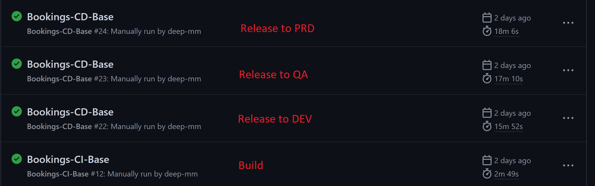
Key takeaways
- Learning GitHub Workflow and Actions.
- Deploy Booking/Coupon Application
- Understanding the Azure Resources and Automation.